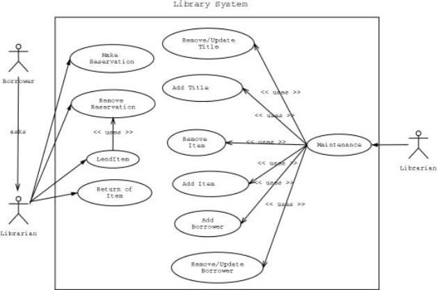
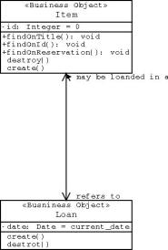
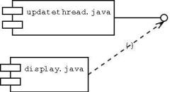
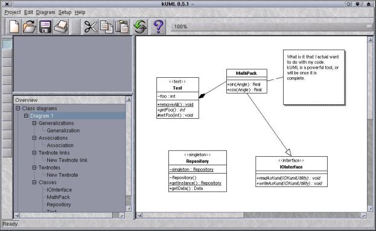
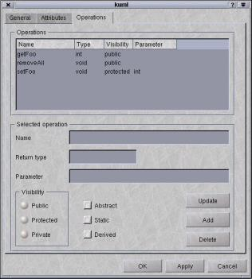
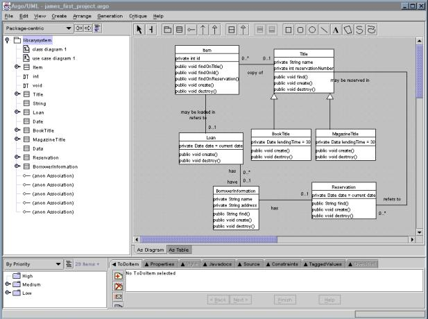

|
Аннотация
Разработка программного обеспечения с активным использованием
повышающего производительность унифицированного языка моделирования UML
(Unified Modeling Language), а также компьютерного проектирования
программных продуктов (CASE-технология: Computer Aided Software
Engineering) усиливают позиции модели Open Source в обеспечении помощи при
разработке полномасштабных решений для сложных задач проектирования
информационных систем. Возможное увеличение в производительности
определяетcя правильным и грамотным выбором UML CASE-инструментов, которые
бы обеспечили разработчиков средствами для детального анализа системы и
разработки ее архитектуры. Данная работа ставит перед собой целью
продемонстрировать преимущества использования модели Open Source совместно
с UML CASE-инструментами в процессе проектирования информационных систем.
Также читателям предлагается анализ модели разработки программного
обеспечения Open Source и ее сравнение с традиционными методами разработки
крупных проектов. Помимо этого в работе рассматриваются стадии процесса
разработки и то, каким образом поддержка программного продукта
переплетается с разработкой ПО в контексте Open Source с соответствующим
типом пользователей. Также приводится обзор основных CASE-инструментов для
разработки ПО с использованием модели Open Source.
Open Source - модель разработки программного
обеспечения
Модель Open Source на самом деле не является каким-то новым методом или
процессом; это всего лишь альтернативный взгляд на способы разработки ПО,
которые традиционно применяются в коммерческих моделях. (Godfrey & Tu,
2000, p. 2). Open Source проекты появились уже в 1960-ых годах, но именно
сейчас сама модель испытывает своего рода возрождение интереса к себе
благодаря более интенсивному использованию Интернет в качестве средства
коммуникации и передачи информации. Процесс разработки программного
обеспечения включает в себя следующее:
- Стратегическое проектирование (на уровне системы вцелом)
- Проектирование на уровне деталей
Модель Open Source поддерживает все аспекты данных процессов и
обеспечивает разработчиков методологией для получения в качестве конечного
продукта программного обеспечения очень высокого качества, которое
соответствует требованиям заказчика. Одним безусловным преимуществом
модели Open Source является то, что она по сути является продолжением
(тесно связанным со своими корнями) "модели научных исследований, где
программный код выступает в качестве результатов такого исследования, а
сами результаты предоставляются коллегам для критики и изучения"
(Bezroukov, 2001, p.10). Как таковая, сила модели заключается в том, что
она поддерживается гораздо большей аудиторией пользователей, чем при
использовании традиционных методов разработки. А главной проблемой модели
является то, что "модель Open Source наилучшим способом работает в случае
проектов, которые уже добились успеха. Модель практически не существует
там, где нет аудитории пользователей" (O'Brien, 2001, p.20).
Как правило, у Open Source проектов имеется один лидер, команда
разработчиков и группа заинтересованных пользователей. У каждого из них
есть свои требования к конечному продукту, и это обычно качественно
улучшает процесс тестирования. Краеугольным камнем этой методологии
является то, что она основана на децентрализованной модели, которая
поддерживается многочисленным сообществом разработчиков, заинтересованных
в получении качественного, зрелого и стабильного продукта. Участники
процесса остаются довольны тем, что имеют возможность писать программный
код, что является главным мотиватором для подавляющего большинства Open
Source программистов. Суть в том, что возможность внесения изменений в код
означает совершенствование процесса разработки.
Однако у модели есть и свои проблемы и ограничения, которые основаны в
большинстве своем именно на децентрализации процесса разработки. Большая
часть разработчиков разбросана по всему миру, в связи с чем поддержка в
течение всего времени жизненного цикла проекта осуществляется через
Интернет. Это, плюс демократический характер Open Source, способствует
замедлению развития проекта. (Bezroukov, p.6). Чем больше проект, тем
больше препятствий на пути к успеху. Open Source проекты, где нет проблемы
географической разрозненности, не испытывают таких побочных эффектов
модели Open Source. Linux-проекты Gnome, KDE и Eazel являются теми, кто
поддерживает эти тщательно координированные усилия в разработке программ
Open Source. Это послужило причиной того, что модель Open Source стала в
центр внимания в методологии разработки ПО.
Модель Open Source может рассматриваться как усовершенствование
достоинств, которыми обладают другие существующие методы разработки. Как и
другие модели, она пытается вобрать все лучшее из имеющейся на сегодня
практики, при это стараясь избежать присущих предшественникам недостатков.
Последнее достигается за счет открытости в передаче информации и
склонности делиться идеями между собой у ведущих разработчиков движения
Open Source. Структура модели Open Source является усовершенствованием
таких моделей, как модель-постепенного-приближения (incremental), модель
компилируй-и-исправляй-ошибки (build-and-fix), а также модели быстрых
прототипов (rapid prototype), причиной чего служит создание циклических
каналов для распространения информации между лидером проекта, командой
разработчиков, пользователями и дебаггерами (см. Рис. 1). Например,
концепция UML разработана и зарегистрирована группой Open Source
Development Network SurgeForce (http://www.surgeforce.com/),
Интернет-репозитории Open Source проектов. Как только вокруг проекта
собирается команда разработчиков, лидер представляет ей первоначальный
релиз для тестирования и расширения функциональности. Разработчики, в свою
очередь, информируют лидера проекта о новшествах, и как только эти
изменения становятся частью кода проекта, определяется целевая группа
пользователей для тестирования продукта. Пользователи также уполномочены
предлагать свои решения для исправления ошибок в архитектуре программы и
предлагать новые функции, которые, по их мнению, лидер должен включить в
проект. Затем таким образом усовершенствованный продукт возвращается к
команде разработчиков, и цикл продолжается до тех пор, пока проект не
станет зрелым, стабильным и готовым к реальному использованию.
Сравнительные модели
Модель Open Source тесно связана с традиционными подходами к разработке
программ из-за того, что она включает в себя ряд черт каждой из этих
моделей.
Модель "Синхронизируй и стабилизируй" (Synchronize and Stabilize
Model): Достоинства этой модели убедительно воплощены в жизнь
корпорацией Microsoft, которая доминирует на рынке операционных систем и
ПО. Данная модель позволяет синхронизировать работу программистов и
периодически стабилизировать продукт в течение различных отрезков процесса
разработки, а не по завершению процесса вообще. Отличие такой модели от
Open Source заключается в том, что она фокусируется на покупателях вообще,
вместо кокретного клиента или проблемы. Как результат, Open Source, как
правило, страдает от размытого представления о требованиях рынка и
недостатка продуманности архитектуры как на стратегическом, так и
детальном уровнях, наряду с минимумом документации (Malik & Palencia,
1999). Этот недостаток сфокусированности стал критическим для многих
проектов. К счастью, те из них, кто следовал проверенным способам в
разработке и где на конечный продукт имелся реальный спрос, добились
большего успеха.
Модель водопада (Waterfall Model): Эта модель предлагает
классическую стратегическую методологию, которая может быть адаптирована к
любому процессу разработки ПО. Данная модель является фундаментом для всех
остальных моделей, и Open Source не является исключением. Тестирование
осуществляется на каждой стадии метода водопада и является неотъемлемым
условием для достижения успеха проектами, использующими модель Open
Source. Тестирование требует проверок и сопоставления между целями и
реальностью на протяжении всего процесса. В модели Open Source это
расширено за счет вовлечения пользователей в процесс улучшения
функциональности программного продукта.
Модель "Компилируй и исправляй ошибки" (Build and Fix Model):
Schach (p.64) замечает, что "к сожалению, необходимо признать, что многие
продукты развиваются по схеме, которую можно окрестить как
"компилируй-и-исправляй-ошибки"". Большинство Open Source проктов на
эмбриональной стадии развития используют именно эту модель, потому что она
соответствует первоначальным целям разработчика или системного
администратора, которые начинают проекты для того, чтобы исправить
какую-то специфическую ошибку, мешающую их работе. Если продукт входит в
стадию зрелости, то он в конце концов переходит от этой модели к
качественно другому продукту, который обладает своей индивидуальной
логикой и служит для удовлетворения потребностей пользователей. Тщательное
планирование может позволить преодолеть ограничения модели Open Source за
счет применения уже зарекомендовавших себя методологий разработки ПО
непосредственно к модели Open Source. Проект Apache был начат
вебмастерами, которые обменивались патчами к веб-серверу NCSA. В итоге
получился веб-сервер, который по популярности занимает первое место из
всех серверов, работающих в Интернет. (Behlendorf, 1999).
Модель быстрого построения прототипов (Rapid Prototype Model):
Данная модель является типичным решением для решения конкретных задач
системного, или стратегического, уровня. Ряд Open Source проектов взял ее
за основу из-за того, что она обеспечивает пользователей сырым, но уже
работающим продуктом, что стимулирует пользователей принимать участие в
разработке. Open Source проекты, начинающиеся как быстро сменяющие друг
друга прототипы во время первых релизов, как правило, терпят неудачу из-за
того, что не могут удержать взятый ранее темп, который требует больше
тестирования и анализа развития, а также более активного участия со
стороны самих разработчиков, что, к сожалению, зачастую не представляется
возможным.
Спиральная модель (Spiral Model): Спиральная модель дает
возможность для проведения тщательного анализа рисков на протяжении всего
цикла развития крупномасштабного ПО. Множество систем прототипов, каждая
из которых направлена на соответствие продукта тому или иному критерию,
используется то того момента, пока ПО не будет готово к реальному
повседневному использованию. Как и другие модели, Open Source, как
правило, используется в связке со спиральной моделью в зависимости от
масштаба проекта и количество заинтересованных пользователей. Реляционные
СУБД, разработанные с использованием модели Open Source, имеют в качестве
неотъемлемых компонентов процесса разработки оценку рисков и проверку. Это
позаимствовано из теории спиральной модели. Следует отметить, что уже
упомянутый фактор критической массы пользователей четко проявляется здесь:
ошибки в разработке СУБД -- это всегда серьезный риск и потенциальные
потери для бизнес-пользователей, которые и составляют основу
пользовательской аудитории СУБД. Повышенный риск усиливает акцент на
контроле и анализе.
Модель поддержки программ, предлагаемая Open Source, является одним из
главных достоинств Open Source, потому что модель основана на такой
взаимосвязи между разработчиками и ПО, что улучшения в коде - это
повышение продуктивности разработчиков и способ для их выживания и
развития. Основа программного кода обычно остается в стабильном,
фиксированном состоянии, пока пользователи определяют ограничения продукта
и делятся своими соображениями по улучшению с разработчиками.
Слабейшим звеном во всей модели Open Source является все то, что
связано с продвижением продукта на рынке, завоевыванием новых
пользовательских аудиторий (на уровне всеобщего принятия) и в определении
реальных потребностей обычных коммерческих организаций. Большинство Open
Source проектов начинаются с минимальными финансовыми вложениями или
вообще без них в качестве решения проблемы, с которой сталкиваются
программисты в их повседневной работе. В качестве иллюстрации достаточно
вспомнить Perl, который начинался именно так и чье развитие, по сравнению
с первыми версиями написанными Ларри Уоллом в 1986 для программной
генерации веб-страниц, просто колоссально.
"Если какая-то фирма серьезно настроена на счет использования Open
Source, то ей необходимо провести свое собственное исследования для
точного определения того, что необходимо программному продукту, чтобы
применение стратегии Open Source оказалось успешным" (Behlendorf, абзац
38). Именно такое понимание Open Source придает мощь и силу самой модели.
Open Source and UML
Open Source проекты, так же как и в случае с патентованным ПО,
нуждаются в определенном уровне анализа требований к продукту и
моделировании для успешного воплощения. UML является радикальным подходом
к разработке, основанной на моделировании и которая включает нормальные
здоровые процессы и создание эффективных архитектур. Спецификации UML дает
разработчику возможность использовать стандартную нотацию для
моделирования систем, компонентов, поведения объектов и реакции
пользователей. Спецификация рабочей группы Object Modelling Group для UML
гласит, что:
"Унифицированный язык моделирования (Unified Modeling Language [UML])
является графическим языком для визуализации, уточнения, конструирования и
документирования артефактов систем с интенсивным использованием
программного обеспечения. UML предлагает стандартизованный способ
написания прототипов систем, включающих такие вещи, как непосредственно
программный код (выражения и функции), схемы потоков данных в БД и
программные компоненты, предназначенные для многократного использования"
(OMG, 2001).
Главным в этой спецификации является то, что UML - это "язык" для
определения того, чего способна будет достичь система, а не метод или
процедура для решения каких-то конкретных проблем. Этот язык может быть
использован для поддержки управления жизненным циклом ПО самыми различными
способами, однако он был создан именно для создания прототипов систем.
Сначала проводится анализ требований к системе или программе, затем
производится моделирования в UML и представляется решение первоначальной
проблемы на концептуальном уровне. Спецификации UML не определяет
конкретных средств реализации, а позволяет создать эскиз проблемы глазами
аналитиков, чтобы затем идеи можно было легко передать команде
разработчиков.
UML определяет нотацию и семантику для следующих типов решений проблем
(Erriksson & Penker, 1998):
- Модель взаимодействия ПО с пользователями системы -
описывает взаимодействия между пользователями и системой, а также
определяет границы этих отношений.
- Модель взаимодействия и кооперации - описывает как объекты
системы взаимодействуют между собой для решения поставленных задач.
- Динамическая модель - использует диаграммы для описания
состояний, принимаемых классами с течением времени, и потока задач,
которые системы должна выполнять.
- Логическая или классовая модель - описывает классы и
объекты системы.
- Модель материальнных составляющих - описывает программное и
иногда аппаратное обеспечение системы.
- Модель материальной эксплуатации - описывает материальную
(физическую) архитектуру и набор компонентов аппаратного обеспечения
системы.
UML дает модели Open Source возможность развития от простых приложений,
ориентированных на решение конкретных пользовательских задач, до крупных
программ, удовлетворяющих требованиям к системам индустриального масштаба.
Разработчки получают в свое распорядение элементы модели и указания для
соответствия международным стандартам OMG. Именно структуру процесса дает
UML организации, занимающейся разработкой ПО. Такая структура позволяет
ясно и четко увидеть сложные системные проблемы.
Тот факт, что UML "не является чей-то собственностью и открыт для всех"
(OMG, 1997, абзац 24) позволяет использовать стандартную нотацию в целом
ряде инструментов и языков, ориентированных на Open Source. UML доказал
свою полезность, когда использовался Apache Group, http://www.apache.org/, и Common
ObjectRequest Broker Architecture (CORBA), http://www.corba.org/. UML дает
возможность создания не зависящих от фирм-разработчиков спецификаций,
которые могут быть использованы программистами, работающими под разными
операционными системами.
Большинство Open Source CASE-средств поддерживают исключительно UML,
методологию, которая является плодом творчества трех ведущих
разработчиков: Grady Booch, James Rumbaugh, and Ivar Jacobson. В отличие
от других объектно-ориентированных методологий, UML задумывался как
открытый стандарт для моделирования, который бы включил в себя достоинства
многих других родственных разработок, развившихся за предыдущее время.
Много инструментов поддерживают UML версии 1.2 и позволяют пользователям
переключаться между визуальными представлениями Grady Booch, OMT
(Object-Oriented Modelling Language [Объектно-ориентированный изык
моделирвоания]) и UML для того, чтобы помочь разработчикам в их миграции
от более старых методов к UML.
Open Source UML-инструменты
Выбор Open Source инструментов для проектирования систем - это нелегкая
задача, потому что большинство инструментов находятся на разных стадиях
развития и только единицы их них позволяют решать сложные комплексные
задачи. Разработка Open Source решения с одновременным использованием C,
C++ и Java только усложняет задачу, потому что многие из продвинутых
инструментов ориентированы только на один язык программирования или тип
задач. Финансовые ограничения, к которым привязано большинство
разработчиков, выливается в создания инструментов с ограниченной
функциональностью, потому что отсутствие финансирования занчительно
понижает темпы и интенсивность развития инструмента.
На SurgeForce cуществуют 28 различных UML-инструментов в разных стадиях
развития (UML, 2001), которые ориентированы на Linux. В то же время
университеты и компании, занимающиеся разработкой интегрированных сред
разработки (IDE), предлагают UML-средства под Windows. Сообщество Open
Source поддерживает несколько средств для интегрирования поддержки UML в
проекты, размер которых варьируется от прилодений с одним разработчиком до
более крупных коллективных инициатив. Проблема заключается не в поиске
инструмента для конкретного языка или библиотеки, а поиске приложения,
которое бы реально смогло работать на протяжении всего цикла разработки
программ.
Модель Open Source повезло, что она так широко поддерживается
разработчиками, в частности, в отношении средств моделирования с помощью
UML. Причина в том, что "UML определяет семантическую метамодель, а
не модель для интерфейса, места для хранения, или запуска
программ, хотя эти понятия могут быть достаточно близки" (OMG, 1997, абзац
13). Реалии Open Source таковы, что в большинстве случаев разработчики
ограничиваются тем, что определяют основные функции продукта, а программы
в итоге остаются недоделанными или плохо поддерживаются. Некоторые
средства разработаны как кросс-платформенные, но такой подход имеет и
другую сторону - приходится выбирать только Java в качестве языка для
разработки. Остальные созданы специально для определенной операционной
системы и несколько предоставляют разработчикам серьезныую поддержку для
своей эксплуатации на протяжении всего цикла разработки программного
продукта.
Dia и UML
Dia является кросс-платформенным приложением для UML-моделирования,
основанного на UML версии 1.2. Это приложение было первоначально
разработано как Linux-альтернатива программе Microsoft Visio. Оно
предлагает пользователям богатые возможности по полноценному управлению
процесса проектирования информационных систем. Однако этот инструмент не
является полноценным в смысле соответствия возмодностям UML, так как он
поддерживает только несколько моделей (выполнение задач, взаимодействие с
пользователями, кооперация классов и объектов и логическая модель).
Согласно Eriksson и Penker (1998, p.35-36), Dia - это современное
CASE-средство, потому что Dia предоставляет функции для рисования
диаграмм, может использоваться как репозиторий, поддерживает навигацию по
моделям, и позволяет обращаться к модели на любом уровне абстракции.
Однако Dia не удовлетворяет требованиям продвинутого инструмента, потому
она не обладает функциональностью для генерирования программного кода,
отладки, интеграции вторичного CASE-средства и не содержит универсальных
моделей для обмена с другими CASE-средствами.
Dia использовалась для моделирования университетской библиотечной
системы (рис. 2) и частично для создания диаграммы классов той же самой
системы (рис. 3). Любая формальная версия спецификации UML может быть
смоделирована с помощью Dia до тех пор, пока пользователь остается в
пределах какой-то определенной спецификации. В функциональность Dia также
входит поддержка любой формальной спецификации компонентов (рис. 4).

Рисунок 2. Программа Dia. Диаграмма реакции на
действия пользователя для университетской библиотечной системы.
|

Рисунок 3. Диаграмма классов в Dia |
|

Рисунок 4. Диаграмма компонентов в Dia
|
kUML
kUML - это Open Source UML-инструмент, разработанный специально для
операционной системы Linux SuSe 6.2. kUML был разработан для поддержки
спецификации UML версии 1.3 и ограничен моделями взаимодействия с
пользователями и построения диаграмм классов системы. Как и в случае со
многими Open Source проектами, настрйока является главным барьером для
пользователей, потому что программа установки целиком и полностью надеется
на то, что пользователь вводит только корректную информацию. Так как этот
инструмент был разработан под SuSe 6.2, то он и заточен именно под тот
вариант Linux. С другой стороны, kUML можно установить на любой
дистрибутив, где есть соответствующие версии библиотек KDE и QT и где
используется RPM, который необходим для установки двух специфических для
SuSe RPM (libcms.so.1 и libmng.so.0). Недостатком этого инструмента
является то, что он еще не зрел, не привлек к себе критической массы
разработчиков и не обладает всей необходимой функциональностью. Хотя его
разработчики и настойчиво рекламирует kUML как программу, которая была
способна импортировать более 1200 классов, связанных с проектом kOffice,
стресс-тесты стабильно приводят kUML к выпадению в кору.
Достоинства kUML заключаются в его поддержки спецификации UML. Этот
инструмент берет части спецификации и фокусируется на разработке именно
этой части. Диаграммы классов очень легко создаются (рис. 5) и управляются
(рис. 6), показывая архитектуру будущей системы. Функци, атрибуты и
абстракции могут быть представлены в виде диаграмм для соответствия
спецификации архитектуры. На сегодняшний день, инструмент не готов к
реальному использованию, однако в случае если разработка kUML получит
дальнейшее развитие, то у Open Source разработчиков появится мощный
инструмент, который позволит использовать приемы для эффективной
разработки ПО.

Рисунок 5. Демонстрация функциональности kUML в
области построения диаграмм классов.
|

Рисунок 6. Демонстрация функциональности kUML в
области редактирование атрибутов классов.
|
ArgoUML
CASE-средство ArgoUML от Tigris более чем удовлетворительно справляется
с ролью инструмента, реализующего спецификацию UML версии 1.3 для Open
Source модели. Этот инструмент является кросс-платформенным
Java-приложением, целиком написанным на Java 1.2 и Java Foundation Class,
в то же время соответствуя стандарту UML от OMG (Tigris, 2001). ArgoUML
обеспечивает полноценное моделирование систем и компонентов для любого
проекта через интерактивныый пользовательский интерфейс. Построение
диагрмм классов (рис. 7), является интуитивно понятным и отображение
зависимостей между связанными класами осуществляется очень легко. Tigris
дал сообществу Open Source программистов полную поддержку UML, а также
удобные средства для перехода между различными стадиями жизненного цикла
проекта от мелького к большому, по мере его развития.

Рисунок 7. Построение классовых диаграмм в ArgoUML.
|
Инструмент позволяет решать реальные бизнес-задачи построения диаграмм
за счет своих когнитивных способностей. Он поддерживает динамически
изменяемый список "To Do" ("Что сделать") на протяжении процесса
разработки и предлагает возможные улучшения, основываясь на завершенной на
данный момент части диаграммы. ArgoUML обладает одной из лучших сред для
моделирования в мире Open Source за счет своей способности создавать
множественные и пересекающиеся друг с другом диаграммы, которые дают
разработчику возможность взглянуть на проект в целом, как на одну систему.
Во время разработки архитектуры поддерживается базовый Java-код системы,
готовый для генерации, как только процесс создания закончится. Большинству
среды для моделирования в мире Open Source еще предстоит пройти несколько
циклов разработки, прежде чем они предложат программистам эффективный
инструменты. В это ArgoUML предоставляет все, что необходимо для того,
чтобы называть полноценным CASE-средством, которое может стать серьезным
помощником в разработке программных продуктов.
xFig
xFig - это один самых слабых Open Source UML-инструментов на
сегодняшний день. Архитектор информационной системы не получит никакого
интерфейса для разработки и столкнется со сложностями при управлении
моделями. Данный инструмент обладает ограниченный арсеналом UML-нотаций,
поддерживая модели взаимосвязи с пользователями, реакции на события и
построения диаграмм классов. xFig является старым X-приложением для
создания векторной графики, которое унаследовало основанные на UML
диаграммы из-за того, что оно было единственным, предоставляющим такого
рода функции в среде Open Source. С помощью xFig возможно создание грубых
черновиков системы, но существует большое количество программ, которые
предлагают целый ряд улучшений даже в этом аспекте. Виной такой
ограниченности в функциональности является не сам инструмент и даже не его
разработчики, а то, (что так часто случается с Open Source проектами) что
в свое время у пользователя, который и написал xFig, возникла
необходимость в поддержке построении UML-диаграмм. Поэтому UML и был
встроен в продукт. Однако функциональность xFig в мире UML больше не имеет
смысла, так как, например, Dia и ArgoUML давно уже превзошли своего
предстшественника.
OpenTool 3.1
OpenTool 3.1 - это мощный кросс-платформенный инструмент для UML
моделирования, основанный на UML версии 1.3. Его достоинства заключаются в
способности генерировать код на C++, Smalltalk или Java, документацию и
осуществлять отладку Java-приложений. В поддержку построения UML-диаграмм
входят диагрммы пакета, классов, последовательностей, состояний, действий
пользователей, и взаимодействия объектов. Способность этого инструмента
интегрироваться с Open Source моедлью заключается в том, что он стоит
недорого и в то же время является полноценным инструментом. Сам по себе
OpenTool идет вразрез с принципами OpenSource, так как он выпущен как
патентованный, а не свободный продукт. Однако он позволяет работать под
Linux, Solaris и Windows. Это делает OpenTool весьма привлекательным.
Заключение
Камнем преткновения в сообществе Open Source является убеждение
большего количества разработчиков в необходимости смотреть не на детали
программ, а видеть большую картину и смотреть на проекты как на системы.
За счет ряда инструментов рапространение UML существенно облегчается, и
вместе с тем уменьшается время разработки программ и увеличается темп их
развития.
Недавние высказывания Martin Fowler о том, что природа конструирования
архитектур умирает (Fowler, 2001, сс.43-46), не являются
безосновательными, учитывая развитие экстремального программирования (XP).
Экстремальное программирование - это процесс, возвращающий разработку
программ к эволюционной разработке архитектуры вместо тщательно
спланированного процесса. Экстремальное программирование - это способность
сохранять ясность и простоту кода с сохранением неких образцов
архитектуры, которые используют не постоянно, а только тогда, когда они
становятся необходимыми.
Значительной проблемой в поддержке UML в мире Open Source является то,
что большинство склонны выбирать UML 1.2, в то время как многие
коммерческие разработчики поддерживают UML 1.4 или уже готовятся к
спецификации UML 2.0. "UML 1.3 был первым зрелым релизом спецификации
языка моделирования" (Kobryn, 1999, c.36). UML версий 1.2 и более ранних
является незрелым. Разработчики должны стараться использовать самые
последние версии, какие только возможны. Неспособность соответствовать
новейшим стандартам UML у Open Source проектов никогда не улучшит
соответствие разработок стандартоам моделирования OMG, что осложнит
понимание и поддержку лидерующих на рынке архитектур типа Entity Java
Beans или COM+
Модель Open Source является полноценной и жизнеспособной альтернативой
в мире разработчиков программного обеспечения. Open Source существует
более 30 лет и легко адаптируется к постоянно изменяющимся условиям и
требованиям за счет интегрирования в себя поддержки UML CASE-средств и
соответствия неумолимо надвигающимся технологическим революциям.
Ссылки
Behlendorf, B. (1999, January) Open Sources: Voices from the Open
Source Revolution. Retrieved February 10, 2001 from the World Wide Web:
www.oreilly.com/catalog/opensources/book/brian.html
Bezroukov, N. (2001). Open Source Software: Development as a Special
Type of Academic Research (Critique of Vulgar Raymondism). Retrieved
February 11, 2001 from the World Wide Web: www.firstmonday.dk/issues/issue4_10/bezroukov/
Erriksson, H., & Penker, M. (1998). UML Toolkit. New York. John
Wiley & Sons.
Fowler, M. (2001, April). Is Design Dead?. Software Development Vol.
9, No. 4, 43-46.
Godfrey, M.W. & Tu, Q. (2000). Evolution in Open Source Software: A
Case Study. Proceedings of the International Conference on Software
Maintenance (ICSM-00), IEEE, 3. 1063-6773.
Kobryn, C. (1999, October). UML 2001: A Standardization Odyssey.
Communications of the ACM, Vol.42, No.10, 29-37.
LinuxCare. (2000, February). Demystifying Open Source: How Open Source
Software Development Works. Retrieved February 15, 2001 from the World
Wide Web: http://www.linuxcare.com/
Malik, S. & Palencia, J.R. (1999, December 6). Synchronize and
Stabilize vs. Open-Source. (Computer Science 95.314A Research Report).
Ottawa, Ontario, Canada: Carleton University, Computer Science.
O'Brien, M. (2001, January). Linux, the Big $, and Mr. Protocol.
Server/Workstation Expert. 20.
Object Modeling Group. (2001). Retrieved February 15, 2001 from the
World Wide Web: http://www.omg.org/
Object Modeling Group. (1997). Press Release. Retrieved February 15,
2001 from the World Wide Web: www.omg.org/news/pr97/umlprimer.html
Schach, S.R. (1998). Classical and Object-Oriented Software
Engineering: With UML and C++. 4th ed. WCB/McGraw-Hill.
Tigris.org. (2001). ArgoUML Features. Retrieved February 19, 2001 from
the World Wide Web: http://argouml.tigris.org/features.html
UML. (2001). UML Notes. Retrieved March 11, 2001 from the World Wide
Web: www.lut.ti/~hevi/uml/projects
James GilliamДжэймс является компьютерным специалистом в
британском подразделении американских ВВС и проживает в городе Sleaford,
Lincolnshire. Джэймс получил степень бакалавра в Мэрилендском университете
по специальности CMIS (Common Management Information Services) и уже
близок к окончанию магистерской программы по CSMN - Software Development
Management (управление разработкой ПО) там же в Мэриленде. Свое свободное
время он проводит экспериментируя со своей домашней сетью, построенной на
смеси Linux Redhat 7.1, Linux Mandrake 8.0, Windows 95 and 98, разумеется,
в пределах терпения своей жены. Он восхищается Linux из-за свободы,
которую Linux дает разработчику, а системное хакерство (со смыслом,
вкладываемом в это слово Эриком Рэймонлом) - это всегда чертовски
интересно. Недавно он познакомил моих двух детей с Linux, доставив им
много радости от общения с интерфейсом Linux, пофиксив какие-то их
проблемы с входом в систему и поиграв с ними в xRally. Также Джэймс
преподает в программирование на C в National Cryptologic School и получает
настоящее удовольствие, если кто-то после его уроков начинает разбираться
в том, почему компьютеры работают именно так, как они работают, и сколько
радости может принести работа с нулями и единичками. Джэймса можно найти
по адресу [email protected] или [email protected].
|